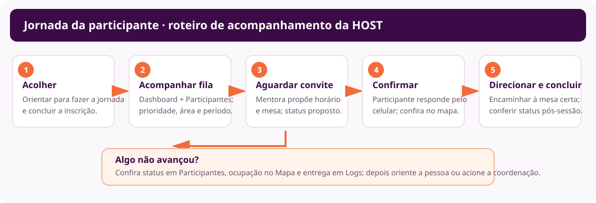
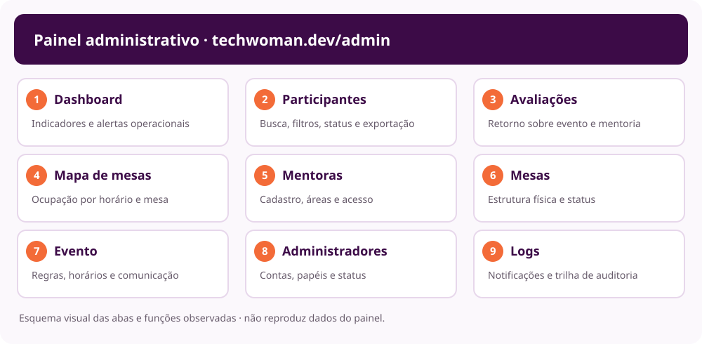

Roteiro visual do atendimento

- AcolherOrientar a jornada e a inscrição.
- Acompanhar a filaConferir área, período e prioridade.
- Esperar o conviteA mentora propõe horário e mesa.
- Conferir confirmaçãoA participante responde pelo celular.
- Direcionar e concluirLevar à mesa certa e conferir o status final.
1. Papel do host
A host ajuda cada participante a entender o próximo passo e mantém a operação organizada. A inscrição não garante mentoria. A mentora propõe horário e mesa; a participante confirma pelo celular. Confira o status antes de encaminhar alguém para uma mesa.
Perfil de operação do evento: acompanhamento da fila, inscrições, status e mesas.
Também configura evento, mesas e acessos. Deixe alterações estruturais com a pessoa responsável.
Fila, agenda e disponibilidade da própria mentora. Oriente a mentora a usar sua área; não aja em nome dela sem autorização.
2. Antes de abrir as mesas
- Acesse techwoman.dev/admin com sua conta de host autorizada. Se faltar uma opção, peça acesso à coordenação; não use a conta de outra pessoa.
- No Dashboard, confira fila, convites pendentes, confirmações, conclusões, faltas, ocupação e capacidade restante.
- Leia Precisa de atenção. O atalho Agendar manualmente abre a lista de participantes; confira status e filtros antes de encaminhar.
- No Mapa de mesas, selecione Dia inteiro para entender a grade e confira os números/localizações das mesas.
- Em Mentoras, confira status de acesso, temas e disponibilidade. Compare com a grade e saiba quem acionar se faltar capacidade.
- Confirme com a coordenação quem é Super admin para mudanças de configuração.
3. Acolher e orientar a participante
- Pergunte em que etapa está: descoberta da área, inscrição, espera por convite, confirmação ou localização da mesa.
- Se ainda não fez a jornada, abra techwoman.dev/jornada. São sete etapas rápidas; no final a pessoa recebe uma sugestão de área, nível e perfil.
- Oriente-a a se inscrever na área de interesse e escolher o período de preferência.
- Explique que a vaga depende da disponibilidade das mentoras e que receber uma sugestão não substitui a confirmação no celular.
- Se já está aguardando, procure a inscrição na aba Participantes. Confirme o nome com discrição e evite repetir dados pessoais em voz alta.
As trilhas são Carreiras, Técnica, Soft Skills, Empreendedorismo e Tecnologia para quem não é da tecnologia. Se houver dúvida, ajude a explorar a lista de mentoras; a decisão da área é da participante.
4. Monitorar a fila e os agendamentos
4.1 Dashboard como radar
Aguardando mostra quem ainda está na fila; Convites pendentes indica propostas esperando resposta.
Confirmadas precisam de encaminhamento; Concluídas e Não compareceu ajudam a acompanhar o fechamento.
Mesas ocupadas e capacidade restante dão a visão operacional da sala.
Os indicadores atualizam periodicamente. Confira novamente antes de orientar ou agir.
4.2 Localizar inscrição
- Abra Participantes.
- Pesquise por nome, e-mail ou telefone; confirme a pessoa com discrição.
- Filtre por Status, Área, Período preferido e Prioridade.
- Use área e período para entender o pareamento esperado. A prioridade ajuda a ordenar a atenção, mas não substitui a checagem da agenda.
- Confira o status antes de encaminhar; não use uma mesa ocupada nem um horário ainda não confirmado.
Prefira consultar a tela em vez de exportar CSV. O arquivo contém dados pessoais e deve ser exportado apenas quando necessário e guardado em local autorizado.
4.3 O que cada status pede da host
Em telas pequenas, deslize a tabela para ver as colunas.
| Status | O que indica | Próximo passo |
|---|---|---|
| Aguardando | Sem horário proposto; continua na fila. | Confira área, período e prioridade; acompanhe a disponibilidade. |
| Horário proposto | A mentora propôs horário; falta resposta da participante. | Oriente a checar convite e responder pelo celular. |
| Confirmada | A sessão foi aceita. | Confira horário e mesa no mapa e encaminhe as duas pessoas. |
| Concluída | Atendimento registrado como realizado. | Oriente sobre avaliação e libere o fluxo conforme a operação. |
| Não compareceu | O sistema registrou ausência. | Confirme o contexto com a coordenação antes de ajustar. |
| Cancelada | Atendimento cancelado. | Confira mapa e fila antes de chamar alguém para o horário. |
5. Conferir mesa e encaminhar sessão
- Abra Mapa de mesas e selecione Agora.
- Localize a linha do horário e a coluna da mesa indicada para a sessão.
- Confira a legenda: Horário proposto, Confirmada, Concluída, Não compareceu e Livre.
- Encaminhe a participante somente quando o status estiver Confirmada. Diga o número da mesa e o horário com clareza.
- Se o mapa e a informação recebida divergirem, não improvise troca: confirme com a mentora e chame a coordenação.
- Após o horário, confira se a sessão foi concluída ou se houve ausência/cancelamento.
6. Situações comuns
A inscrição não aparece
Confirme como a pessoa escreveu o nome/e-mail sem expor esses dados. Pesquise e filtre em Participantes. Se não aparecer, confirme se a inscrição foi concluída na jornada e encaminhe para a organização se persistir.
A pessoa aguarda há bastante tempo
Confira se está como Aguardando e se há prioridade. Verifique área, período e disponibilidade. Explique que o pareamento depende de agenda real; não prometa horário. Acione a coordenação se a prioridade ou o fluxo precisar de revisão.
O convite não chegou
Peça para conferir celular e e-mail usados na inscrição. Confira se o status é Horário proposto ou Confirmada. Se suspeitar de falha, consulte Logs → Notificações ou acione a coordenação. Não crie outro agendamento para contornar um convite pendente.
O horário/mesa não está livre
Confira Agora, horário e legenda; role a grade. Mantenha a pessoa fora da mesa até mentora/coordenação confirmar a correção. Alterar a grade geral é função de Super admin.
Cancelamento ou falta
Confira Participantes, Dashboard e Mapa. Avise a coordenação e siga o procedimento do evento para liberar mesa ou chamar alguém da fila. Não registre conclusão ou ausência por suposição.
A conversa ocorreu fora da mesa
A mentora pode usar Registrar atendimento fora da mesa na própria agenda, depois da conversa. Oriente-a; a host não deve criar esse registro por ela sem autorização.
7. Apoiar a mentora
Oriente para techwoman.dev/entrar e para as abas Aguardando, Minha agenda e Disponibilidade. A mentora pode pesquisar por nome/assunto, filtrar por área/período/prioridade, conferir sessões e marcar os horários em que pode atender.
Se estiver sem acesso, desativada ou sem conseguir ajustar disponibilidade, chame coordenação/Super admin. Redefinir senha, desativar conta e alterar cadastro não fazem parte do atendimento normal da host.
8. Fechar o turno
- Confira sessões concluídas, pendentes, canceladas e ausências no Dashboard.
- Confirme com a coordenação se ainda há participantes sem orientação.
- Verifique se as mesas ficaram livres e sinalize ocorrências.
- Encaminhe relatos de notificações ausentes para conferência em Logs.
- Saia do painel em computador compartilhado.
9. Guia de consulta rápida das abas

Dashboard
Use durante todo o turno para fila, convites, sessões, capacidade e alertas.
Participantes
Pesquise inscrição e filtre por status, área, período e prioridade.
Mapa de mesas
Confira mesa e horário antes de encaminhar.
Mentoras
Veja áreas, disponibilidade e status de acesso. Cadastro/conta: coordenação.
Avaliações
Acompanhe retorno após a mentoria; os formulários abrem após conclusão.
Logs
Investigue entrega de notificações e trilha de auditoria; proteja os dados.
Mesas
Consulta operacional; adicionar/alterar mesas é tarefa de Super admin.
Evento
Consulte grade e regras. Alterações são de Super admin.
Administradores
Não é necessária no turno comum; gestão de papéis fica com Super admin.